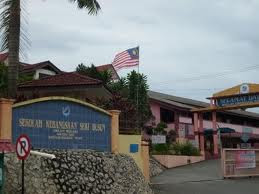
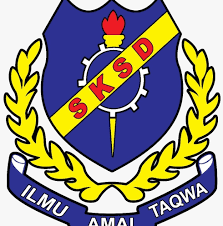
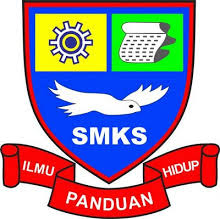
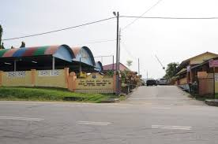
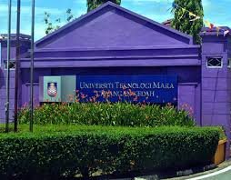

Elementary School
This is Sekolah Kebangsaan Presint 9 (1). I used to study here before I moved to Kedah in the middle of grade 2. What I remember from this school is when I was in grade 1, every student had to wear a name tag with a random word in English, and I got the word 'hurt'.
 
This is Sekolah Kebangsaan Seri Dusun, my elementary school. I study here from grade 2 to grade 6. My favorite subject at this time is science. The most memorable event that happens is when our batch goes on a trip to Muzium Padi in Alor Star and we spend a whole day there.
Secondary School
 
This is Sekolah Menengah Kebangsaan Sik, my secondary school. I study here from form 1 until form 5. I have a lot of memories here, sweet and bitter memories. My sweetest memory here is when my friend and I skipped school for a whole day without getting caught. Meanwhile, the bitter one is when a day police came to our classroom for a bullying case. I finished my secondary class here and got my PT3 and SPM here
University

Last but not least UiTM Kedah. I'm currently studying at UiTM Kedah, exploring exciting topics and enhancing my skills in information management.